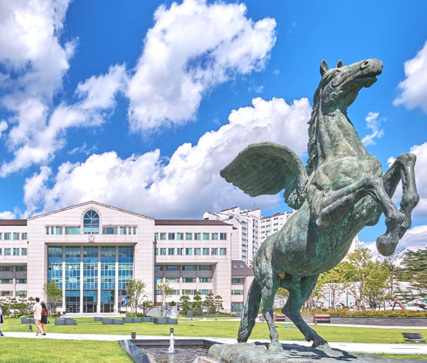

Social Artificial
Intelligence Lab.
Artificial Intelligence for Social Good through robust and generalizable AI for complex real-world challenges.
About UsWe Build AI that
We Build AI that
Creates Real-World Impact.
Social Artificial Intelligence Lab at Kwangwoon University is led by Prof. Young-Jae Park. Our research is dedicated to AI for Social Good, with a strong focus on computer vision and machine learning.
We develop robust and generalizable methodologies for complex real-world challenges, and pursue interdisciplinary approaches that integrate insights from diverse domains to build intelligent systems with meaningful societal impact.

Kwangwoon University · Seoul
News
Our Latest
Our Latest
Updates
Sep 2026
From Script to Shot: A Benchmark for Grounding Screenplays in Movies will appear at ECCV 2026.
Aug 2026
Mar 2026
Mar 2026
Social AI Lab officially launched at
Kwangwoon University.
Feb 2026
Prof. Park received the
Outstanding Research Award, Ministry of Science and ICT (부총리 겸 과학기술정보통신부 장관상).
Dec 2025
VideoTitans: Scalable Video Prediction with Integrated Short was presented at NeurIPS 2025.
Nov 2025
Our computational literature review work appeared in
Information Processing & Management.
Feb 2025
Our satellite precipitation nowcasting work was presented as an
AAAI 2025 Oral.
Nov 2024
What Makes Deviant Places? appeared in IEEE TPAMI.
Jun 2024
SingularTrajectory was presented at CVPR 2024.
May 2024
Dec 2021


Join Us
youngjae.park@kw.ac.kr →Interested in joining Social AI Lab?
연구실 합류에 관심이 있는 분은 이메일로 문의해 주세요.